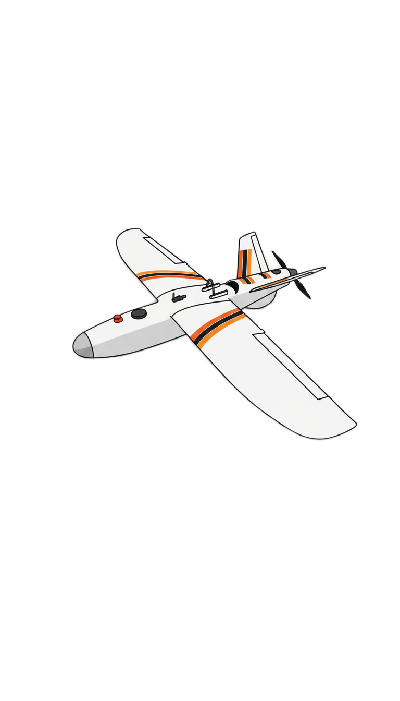

Mühendislik Harikası İHA Platformlarımız
ALTEK Teknoloji Takımı olarak; tam otonom hava muharebesi, derin öğrenme ile hedef kilitlenme, kamikaze dalış ve gelişmiş aviyonik mimariye sahip insansız hava araçları geliştiriyoruz.
ALTEK 2026 Savaşan İHA Platformu
psychology Platform Vizyonu & Görev Kabiliyetleri
ALTEK 2026 Savaşan İHA, TEKNOFEST Savaşan İHA yarışma isterleri doğrultusunda hava-hava dinamik muharebe, otonom hedef takibi ve kamikaze dalış görevlerini icra etmek üzere optimize edilmiştir.
* Gün batımı pist uçuş testi ve motor/itki sistemi telemetrisi.
rocket Otonom Kamikaze & QR Kod Tanıma
Belirlenen kara hedefine yüksek hız ve dik açıyla dalış gerçekleştiren İHA, dalış esnasında hedef üzerindeki QR kodu yüksek çözünürlüklü kamerası ile çözümleyerek yer istasyonuna şifrelenmiş paket olarak iletir.
schema Sistem Mimarisi & Donanım Blokları
3 KATMANLI ENTEGRE MİMARİUçuş Kontrol Kartı
IMU, barometre, GPS ve manyetometre verilerini füzyonlayarak yüksek frekansta kontrol yüzeylerini ve itkiyi yönetir.

Görev Bilgisayarı
Kamera akışından gerçek zamanlı YOLO nesne tespiti, otonom kilitlenme koordinatı hesaplama ve MAVLink telemetri köprüsü.

Yer Kontrol İstasyonu
Özel yazılım arayüzü ile batarya, irtifa, kilitlenme durumu, harita takibi ve yarışma sunucusu entegrasyonu.

ALTEK TALON
GÖREV BAŞARISI2025 TEKNOFEST Savaşan İHA yarışması için özel olarak geliştirilen sabit kanatlı taktik İHA platformumuz. Yüksek aerodinamik kararlılığı, geniş iç aviyonik hacmi ve V-kuyruk (V-tail) kontrol geometrisi ile başarılı uçuş testlerini tamamlamıştır.

Geniş hücum açılarında kaldırma kuvvetini maksimize eden kanat profili ve rüzgar tüneli simülasyonlarıyla optimize edilmiş hava giriş kanalları.
ALTEK Teknoloji Takımı 2026 Tanıtımı
Mühendislik sürecimiz, atölye çalışmalarımız ve otonom İHA vizyonumuzun yer aldığı resmi TEKNOFEST proje tanıtım videosu.